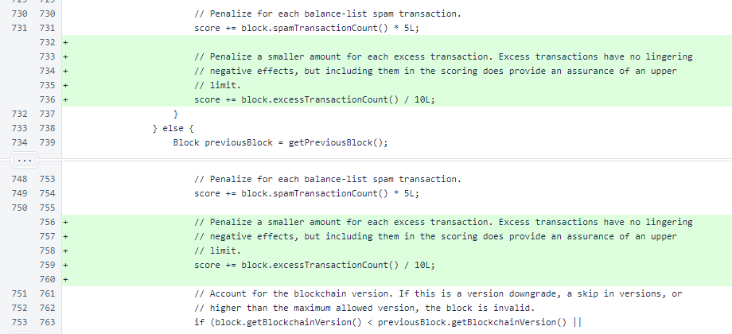
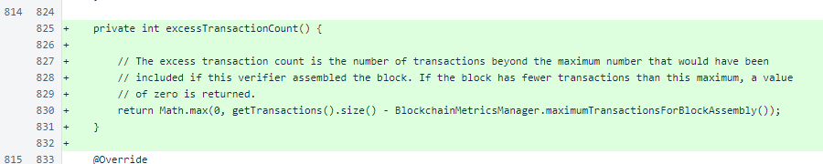

Nyzo version 560 (commit on GitHub) adds a per-block transaction limit to the consensus voting process.
This version affects the verifier only. If you are running a verifier on version 549 or below, please upgrade it soon. This version will penalize excessively large blocks in the consensus process, and versions 549 and below do not apply the transaction limit to the blocks they assemble.
In version 550, a per-block transaction limit was added to the block-assembly process. However, verifiers that have not upgraded will still produce blocks without regard for that limit. Block 5745501 contained 101 transactions, which was 31 transactions over the specified limit at the time.
As long as even a single verifier is producing blocks that do not respect the transaction limit, and as long as the cycle is accepting those blocks, the cycle is vulnerable to spikes in transaction volume. This version eliminates that vulnerability by adding a transaction-limit calculation to the consensus vote calculation.
In Block.chainScore(), a penalty is now applied in two places. The first is the condition for blocks from new verifiers, and the second is the condition for blocks from verifiers already in the cycle. If this method continues to acquire more penalty adjustments, and if the adjustments continue to be consistent between the new-verifier and existing-verifier cases, the adjustments will be encapsulated in a separate method to improve logic locality.
As the comment states, the penalty for excess transactions is smaller than the penalty for balance-list spam transactions. The block presented as an example, block 5745501, would be penalized 3 points under this scoring system. This is not enough of a penalty to match the score of 4 of the block produced by the next verifier in the cycle. It would introduce a 60-second delay, however, which would make approval of a sentinel block by the same verifier more likely.
This update will be a wonderful opportunity to observe how Nyzo's consensus process operates. Unlike the blockchain rules that strictly define valid and invalid blocks, the consensus scoring process operates on preference and time. A verifier generates a score to rank preferences. This score is used to choose a most-preferred option independently, and it is also used to decide whether an emerging consensus deserves this verifier's support at the current moment. These rules allow the blockchain to move forward as new consensus rules are introduced, gradually applying and strengthening the rules over time as the cycle adopts them.
Block.excessTransactionCount() provides the number of excess transactions for use in the score calculation. This method uses BlockchainMetricsManager.maximumTransactionsForBlockAssembly() to provide a transaction limit. This is the same method used in the block-assembly process.
